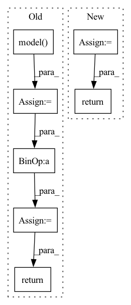

Pattern ID :13053

Before Change
image = torch.from_numpy(image).unsqueeze(0).to(device)
mask = torch.from_numpy(mask).unsqueeze(0).to(device)
inpainted_image = self.model(image, mask)
cur_res = inpainted_image[0].permute(1, 2, 0).detach().cpu().numpy()
cur_res = cur_res[0:origin_height, 0:origin_width, :]
cur_res = np.clip(cur_res * 255, 0, 255).astype("uint8")
cur_res = cv2.cvtColor(cur_res, cv2.COLOR_BGR2RGB)
return cur_res
After Change
image = (image.transpose(1, 2, 0) * 255).astype(np.uint8)[:, :, ::-1]
for crop_image, crop_box in crop_result:
x1, y1, x2, y2 = crop_box
image[y1:y2, x1:x2, :] = crop_image
return image
def _run_box(self, image, mask, box):
In pattern: SUPERPATTERN
Frequency: 3
Non-data size: 7
Instances
Fragment ID: 44036255
Project Name: sanster/lama-cleaner
Commit Name: 43c9c22c7312dd39feac4e3783e9ec080fd64243
Time: 2022-03-22
Author: cwq1913@gmail.com
File Name: lama_cleaner/lama/__init__.py
M Class Name: LaMa
N Class Name: LaMa
M Method Name: __call__(3)
N Method Name: __call__(3)
M Parent Class:
N Parent Class:
M File Name: lama_cleaner/lama/__init__.py
N File Name: lama_cleaner/lama/__init__.py
M Start Line: 40
M End Line: 55
N Start Line: 50
N End Line: 65
'>
Before Change
def validation_step(self, batch, batch_idx):
images, labels, labels_lengths = batch
labels_lengths = labels_lengths.squeeze(1)
batch_size = images.size(0)
logits = self.model(images)
input_lengths = torch.LongTensor([logits.size(0)] * batch_size)
loss = self.criterion(logits, labels, input_lengths, labels_lengths) / batch_size
// Logging to TensorBoard by default
self.log("val_loss", loss)
return loss
def configure_optimizers(self):
optimizer = torch.optim.Adam(self.parameters(), lr=Config.LR)
After Change
def validation_step(self, batch, batch_idx):
loss, bs = self.get_loss(batch)
return {"loss": loss, "bs": bs}
def configure_optimizers(self):
optimizer = torch.optim.Adam(self.parameters(), lr=Config.LR)
'>
Fragment ID: 44036239
Project Name: pooya-mohammadi/crnn-pytorch
Commit Name: 7ec45dfb9a0ee95749b644ecf03508023a920adc
Time: 2022-06-05
Author: pooyamohammadikazaj@gmail.com
File Name: train.py
M Class Name: LitCRNN
N Class Name: LitCRNN
M Method Name: validation_step(3)
N Method Name: validation_step(3)
M Parent Class: pl.LightningModule
N Parent Class: pl.LightningModule
M File Name: train.py
N File Name: train.py
M Start Line: 43
M End Line: 52
N Start Line: 77
N End Line: 78
'>
Before Change
// It is independent of forward
images, labels, labels_lengths = batch
labels_lengths = labels_lengths.squeeze(1)
batch_size = images.size(0)
logits = self.model(images)
input_lengths = torch.LongTensor([logits.size(0)] * batch_size)
loss = self.criterion(logits, labels, input_lengths, labels_lengths) / batch_size
// Logging to TensorBoard by default
self.log("train_loss", loss)
return loss
def validation_step(self, batch, batch_idx):
images, labels, labels_lengths = batch
After Change
def training_step(self, batch, batch_idx):
loss, bs = self.get_loss(batch)
return {"loss": loss, "bs": bs}
def training_epoch_end(self, outputs) -> None:
loss = self.calculate_metrics(outputs)
'>
Fragment ID: 44036252
Project Name: pooya-mohammadi/crnn-pytorch
Commit Name: 7ec45dfb9a0ee95749b644ecf03508023a920adc
Time: 2022-06-05
Author: pooyamohammadikazaj@gmail.com
File Name: train.py
M Class Name: LitCRNN
N Class Name: LitCRNN
M Method Name: training_step(3)
N Method Name: training_step(3)
M Parent Class: pl.LightningModule
N Parent Class: pl.LightningModule
M File Name: train.py
N File Name: train.py
M Start Line: 31
M End Line: 40
N Start Line: 61
N End Line: 62